课题组网站搭建
1. 搭建网站的目的
搭建课题组服务器出于以下几个目的：
- 作为课题组的内容展示平台，收集、记录、展示成员风采
- 传播、传承实验室操作技能（文字 + 图片 + 视频）
- 作为文件服务器对课题组实验数据进行存储
- 作为实验室药品管理中心数据库
- 作为实验室测序引物中心数据库
- 作为实验室田间材料分类管理数据库（材料生育情况、各播种地点气象学信息）
- 读书报告学习交流中心
- 匿名墙
- ……
2. 搭建服务器基本框架
本着尽量使用开源软件、安全稳定的原则，我们使用 LNMP 架构进行服务器网站搭建基本框架。BLOG 系统采用开源静态页面 Hexo 软件进行生成。文件系统服务由 nginx 提供并且由 h5ai 软件提供目录列表服务。
- Ubuntu Server version 18.04.2 LTS .
- Nginx version 1.16 or greater.
- MySQL version 5.6 or greater OR MariaDB version 10.1 or greater.
- PHP version 7.3 or greater.
- h5ai version 0.29.2
- node.js version 12.0
- Git version 2.9
- Hexo version
- WordPress
- ……
LNMP是指一组通常一起使用来运行动态网站或者服务器的自由软件名称首字母缩写。L 指 Linux，N 指 Nginx，M一般指 MySQL，也可以指 MariaDB，P 一般指 PHP，也可以指 Perl 或 Python。
2.1 安装 Ubuntu Server 18.04 LTS
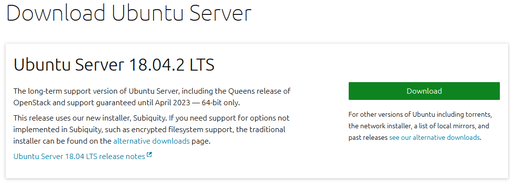
下载链接：Ubuntu Server 18.04.2 LTS
我们使用 Windows 10 软件商店自带 Ubuntu 18.04 进行试验测试，安装方法如下：
- 打开
控制面板 --> 程序 --> 程序和功能点击启动或关闭 Windows 功能 - 点击启用
适用于 Linux 的 Windows 子系统 - 重启机器
- 打开微软应用商店，搜索 Ubuntu
- 点击 Ubuntu 18.04 下载安装
- 添加 Ubuntu 用户及密码
- 大功告成

安装完成后，将软件源替换为清华源, 备份并编辑 sudo mv /etc/apt/sources.list /etc/apt/sources.list.bak && sudo vim /etc/apt/sources.list
1 | # 默认注释了源码镜像以提高 apt update 速度，如有需要可自行取消注释 |
使用 sudo apt update && sudo apt upgrade 更新本地软件。
安装基本软件：sudo apt install htop tree git vim curl
2.2 使用宝塔面板一键安装 LNMP
宝塔面板 是一款服务器管理软件，支持 Windows 和 Linux 系统，可以通过 Web 端轻松管理服务器，提升运维效率。例如：创建管理网站、FTP、数据库，拥有可视化文件管理器，可视化软件管理器，可视化CPU、内存、流量监控图表，计划任务等功能。
Centos安装命令：
1 | $ yum install -y wget && wget -O install.sh http://download.bt.cn/install/install_6.0.sh && sh install.sh |
Ubuntu/Deepin 安装命令：
1 | wget -O install.sh http://download.bt.cn/install/install-ubuntu_6.0.sh && sudo bash install.sh |
Debian安装命令：
1 | wget -O install.sh http://download.bt.cn/install/install-ubuntu_6.0.sh && bash install.sh |
Fedora安装命令:
1 | wget -O install.sh http://download.bt.cn/install/install_6.0.sh && bash install.sh |
Linux面板6.9.7升级命令：
1 | curl http://download.bt.cn/install/update6.sh|bash |
安装成功后，安装信息给出宝塔管理面板的登陆接口及账户密码：

在浏览器中输入宝塔控制面板管理入口：192.168.5.208:8888/a3b17e21, 输入账户tdmpqguz, 输入密码df53ffd8 登陆管理。
安装 nginx, MySQL(mariadb), PHP等软件：

安装完成后重启服务器及控制面板，若 nginx 服务没有启动，则在终端或者控制面板中手动启动之。
2.3 使用 LNMP 一键安装
LNMP一键安装包是一个用Linux Shell 编写的可以为 CentOS/RHEL/Fedora/Aliyun/Amazon、Debian/Ubuntu/Raspbian/Deepin/Mint Linux VPS 或独立主机安装 LNMP(Nginx/MySQL/PHP)、LNMPA(Nginx/MySQL/PHP/Apache)、LAMP(Apache/MySQL/PHP) 生产环境的 Shell 程序。
使用一键安装命令安装 LNMP：
1 | # wget http://soft.vpser.net/lnmp/lnmp1.6.tar.gz -cO lnmp1.6.tar.gz && tar zxf lnmp1.6.tar.gz && cd lnmp1.6 && ./install.sh lnmp |
安装完成后：
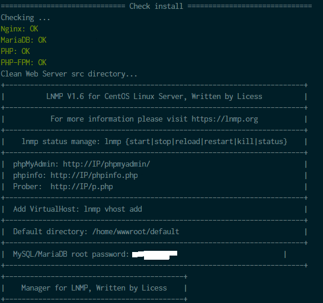
浏览器输入 IP 地址显示安装成功：
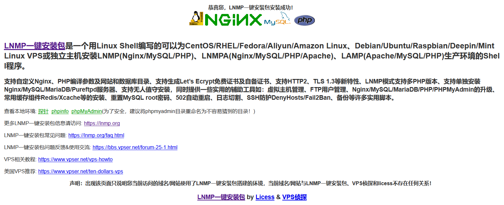
3. 使用 H5ai 搭建文件目录列表
h5ai 是一款 PHP 开发的目录列表程序，由德国开发者 Lars Jung 主导开发，它提供多种文件目录列表呈现方式，支持多种主流 Web 服务器，例如 Nginx、Apache、Cherokee、Lighttpd 等，支持多国语言，可以直接在线预览视频、图片、音乐等，效果很炫。
示例网站：https://larsjung.de/h5ai/demo/
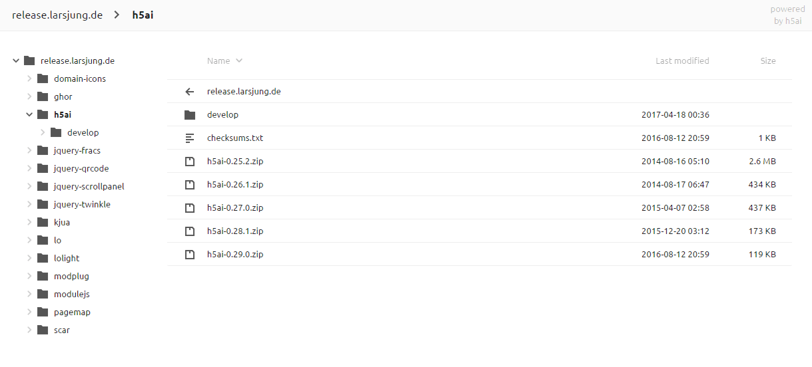
3.1 宝塔面板下安装配置 h5ai
- 在宝塔控制面板中新建站点，如果有域名则填写域名，否则填写 IP 地址。
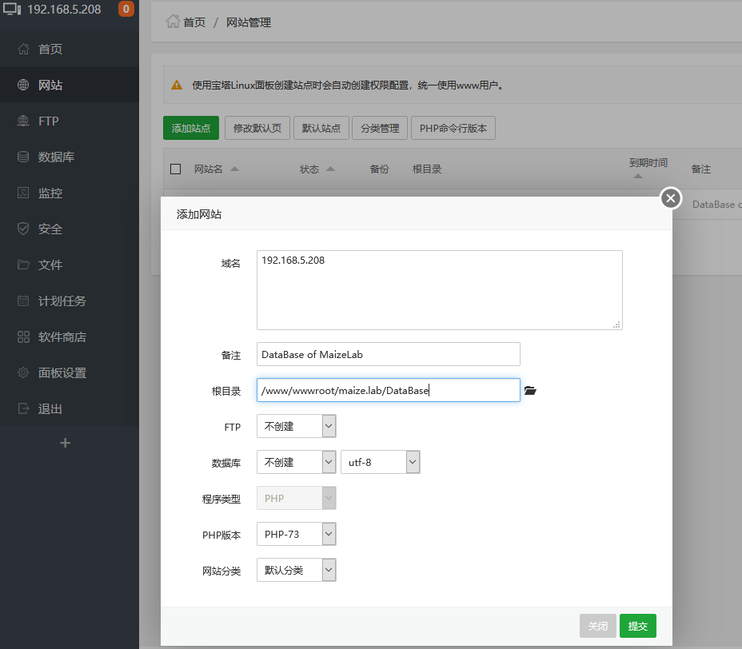
- 从 h5ai 网站下载文件: h5ai-0.29.2.zip。将下载好的文件上传至新建下载网站根目录，并解压。
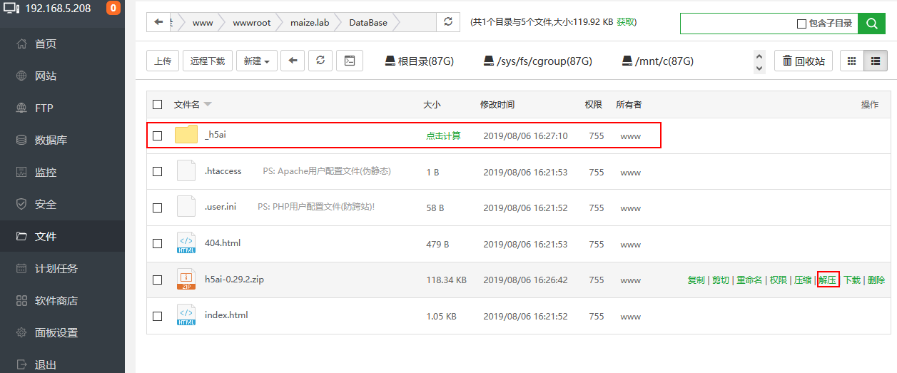
- 删除其他无关文件。
1 | 404.html |
- 在宝塔面板中，进入软件商店，找到 PHP 设置。
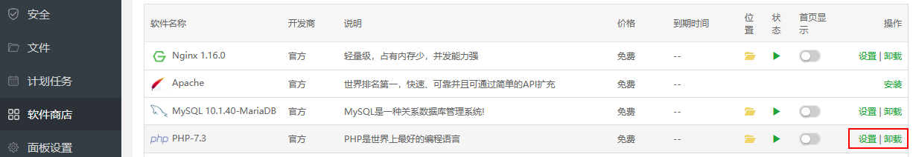
- 修改 PHP 配置 - 禁用函数，删除禁用函数
exec、putenv、passthru、scandir。
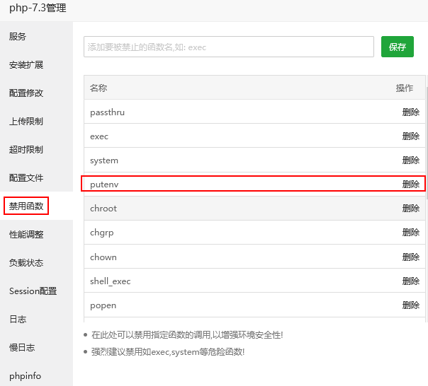
- 同样在软件商店中修改 Nginx 配置, 在
index.html行后添加/_h5ai/public/index.php。
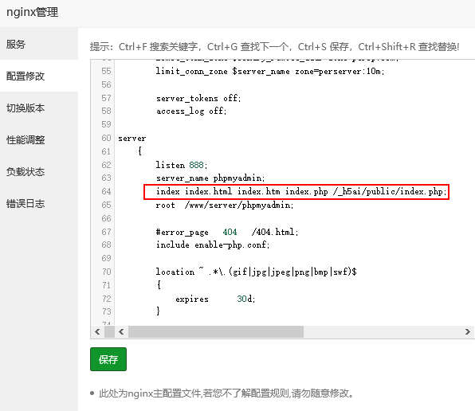
- 添加在线预览图片等插件。
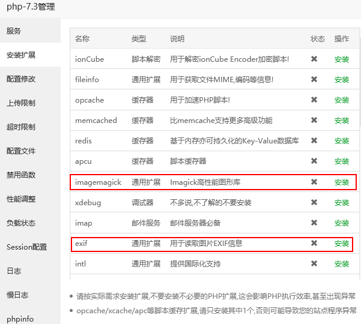
配置完成后，重启机器，在浏览器中输入 http://IP/_h5ai/public/index.php 查看 h5ai 目录。
3.2 在 LNMP 框架下安装配置 h5ai
使用
lnmp vhost add命令新建站点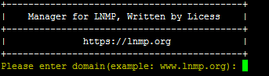
输入站点域名，没有的话直接使用 IP 地址
设置网站目录，以绝对路径表示
执行
./pureftpd.sh安装 ftp 服务，并添加 ftp 账号及目录将 h5ai-0.29.2.zip 解压后上传至网站根目录
访问 http://域名或IP/_h5ai/public/index.php 查看是否可以访问成功
修改当前站点下的 nginx 配置文件
/usr/local/nginx/conf/vhost/域名.conf在 root 行下添加：index index.html index.php /_h5ai/public/index.php;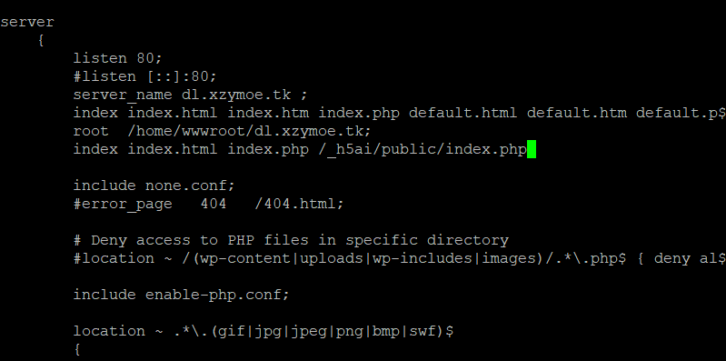
修改 php 配置文件
/usr/local/php/etc/php.ini, 搜索disable_functions，将其后面的scandir、exec和passthru删除，保存使用
lnmp restart命令重启 LNMP 服务安装必要的插件
将要分享的文件放置于根目录下，在浏览器中输入 IP 地址即可
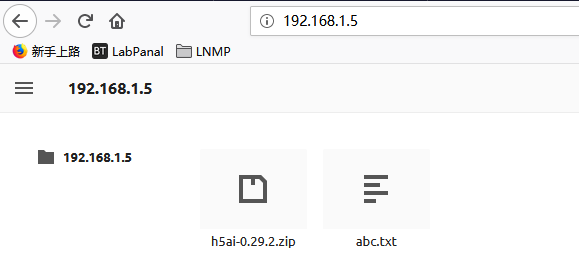
搞定收工。
3.3 安装 h5ai 相关插件
3.3.1 安装 exif 模块
- 下载 PHP 源码安装包：php-7.3.8.tar.gz
- 解压后，切换至
php-7.3.8/ext/exif目录下 - 运行
/usr/local/php/bin/phpize - 执行编译命令
./configure --with-php-config=/usr/local/php/bin/php-config - 执行编译及安装
make && make install - 修改
/usr/local/php/etc/php.ini文件，查找：extension=再最后一个extension=后面添加上extension = "exif.so" - 执行
/etc/init.d/php-fpm restart重启 PHP - 搞定收工
3.3.2 安装 ffmpeg 实现视频缩略图预览
使用命令 apt install ffmpeg -y 安装 ffmeg 实现视频缩略图预览。
3.3.3 安装 imagemagick 实现 PDF/图片预览
使用命令 apt install imagemagick -y 安装 imagemagick 实现 PDF、图片的缩略图预览。
3.3.4 开启数据打包下载
使用命令 apt install zip 实现数据打包下载。
3.4 实现 h5ai 其他功能
编辑 /home/wwwroot/database.lab/_h5ai/private/conf/options.json 文件，实现 h5ai 其他功能。
修改后台密码
首先在此网址 http://www.ttmd5.com/hash.php?type=A 生成自定义 sha512 密码, 然后修改 “passhash” 字符后的字符串为解密的字符串。开启打包下载
1
2
3
4
5
6"download": {
"enabled": true,
"type": "php-zip",
"packageName": null,
"alwaysVisible": true
}开启文件信息显示
1
2
3
4
5
6
7"info": {
"enabled": true,
"show": false,
"qrcode": true,
"qrFill": "#999",
"qrBack": "#fff"
}默认简体中文
1
2
3
4
5"l10n": {
"enabled": true,
"lang": "zh-cn",
"useBrowserLang": true
}开启文件搜索
1
2
3
4
5
6"search": {
"enabled": true,
"advanced": true,
"debounceTime": 300,
"ignorecase": true
}开启多文件选择
1
2
3
4
5"select": {
"enabled": true,
"clickndrag": true,
"checkboxes": true
}
4. 搭建 Hexo 博客网站
4.1 安装最新长期支持版 Node.js
Node.js 是一个通用编程的JavaScript平台，允许用户快速构建网络应用程序。 通过在前端和后端利用JavaScript，Node.js使开发更加一致和集成。
从官方网站来看，最新的 LTS Nodejs 版文为 v10：
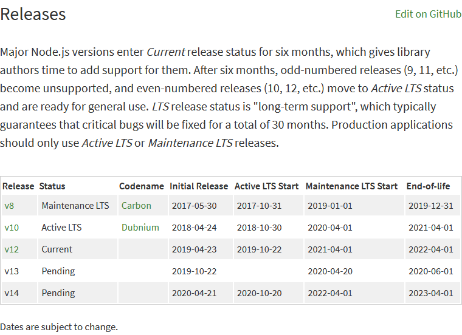
参考文档：https://github.com/nodesource/distributions 安装 node.js v12。
1 | # Using Ubuntu |
方便快捷：
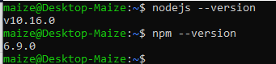
通过npm安装node.js
当然可以首先安装 node.js 的版本管理包 npm 然后再使用 npm 安装需要版本的 node.js。
1 | ## install NVM (Node Version Manager) |
npm 为 nodejs 的独立包，使用以下命令升级 npm：
1 | $ sudo npm install npm@latest -g |
4.2 安装 Hexo 博客框架
Hexo 是一个快速、简洁且高效的博客框架。Hexo 使用 Markdown（或其他渲染引擎）解析文章，在几秒内，即可利用靓丽的主题生成静态网页。其主要通过在本地配置好相应界面后，通过 git 直接传输至服务器然后进行静态展示。
Hexo 的安装依赖于 git 以及 node.js (version > 6.9), 安装较为简单：
1 | $ sudo npm install -g hexo-cli |
具体配置详细见文章《Hexo搭建配置指南》。
4.2 Hexo 的配置
4.2.1 配置网站信息
首先使用 hexo init [folder] 新建一个网站，编辑 _config.yaml 文件，添加相关网站信息等。
4.2.2 配置 Hexo 主题
下载适用的主题，并在 _config.yaml 配件中进行修改。
4.3 Hexo 的使用
Hexo 搭建的 Blog 系统主要用于大家日常的学习笔记、心得、读书报告等的展示。使用命令 hexo new [layout] <title> 新建相关内容。
1 | $ hexo publish [layout] <filename> # 发表草稿 |
5. 参考链接
- https://linuxize.com/post/install-mariadb-on-centos-7/
- 宝塔命令大全 https://www.bt.cn/btcode.html
- https://linuxconfig.org/install-ffmpeg-on-ubuntu-18-04-bionic-beaver-linux
- https://blog.iwyc.cn/h5ai
- https://github.com/limedroid/HexoLearning